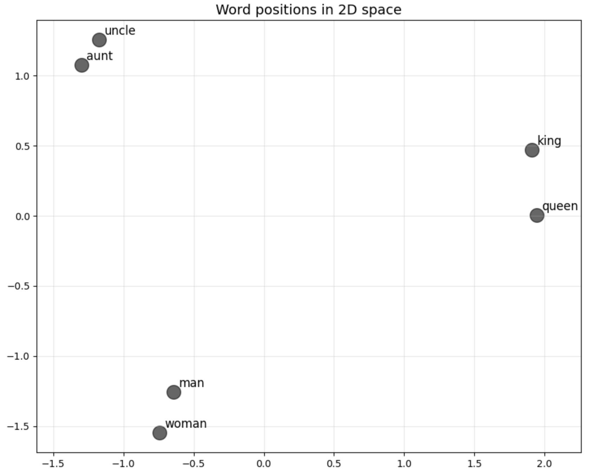

How computers generate words
One simple way is with bigrams. Take a bunch of text and count which words follow which. For each word you work out the probability of what comes next by looking at how often each pair showed up.
Let's say we have the following data:
the dog sat on the mat
the dog is on the floor
the dog is walking
the dog wants the bone
the dog wants the toy
the dog wants food
We can count how often a word appears after another:
| First Word | Following Word | Count |
|---|---|---|
| the | dog | 6 |
| mat | 1 | |
| floor | 1 | |
| bone | 1 | |
| toy | 1 | |
| dog | wants | 3 |
| is | 2 | |
| sat | 1 | |
| sat | on | 1 |
| on | the | 2 |
| is | on | 1 |
| walking | 1 | |
| wants | the | 2 |
| food | 1 |
Now, if we want to know which word is the most likely to come after
dog, we can look up the table and find the word
wants.
To generate new text, the computer starts with a word, picks the next based on those probabilities, then uses that word to predict the following one. Repeat until you have a sentence.
Modern LLMs use transformer architectures that can look at hundreds or thousands of words of context at once. Instead of probability tables, they use deep neural networks with billions of parameters that learn patterns across whole documents.
The core principle is the same though: predict the next word based on what came before.
This is also why prompts matter. "You are a helpful assistant" pushes the model toward certain kinds of responses. Each extra detail narrows what it can say next.
Temperature
This controls how predictable or creative the output is.
Imagine we want to predict what comes after "the dog" based on these sentences. Looking at the data, after "the dog" we see:
- "wants" — appears 3 times
- "is" — appears 2 times
- "sat" — appears 1 time
The model first assigns a score to each possible next word. Those scores go through a function called softmax that turns them into probabilities.
Without temperature, the probabilities might look like this:
wants = 50%
is = 33%
sat = 17%Temperature changes how much softmax favours the highest-scoring options.
Low temperature makes the most likely words even more likely:
wants = 75%
is = 20%
sat = 5%High temperature spreads the probabilities more evenly:
wants = 40%
is = 35%
sat = 25%So:
- Low temperature = safer, more predictable output
- High temperature = more variety, more creativity, more mistakes
Temperature doesn't give the model new knowledge. It only changes how often it picks less likely words.
Tokens
If LLMs used words, the model would need a vocabulary of millions of entries to cover all possible words in all languages. Instead, they break text into common chunks that can be recombined.
This also handles variations well. Rather than storing "run," "runs," "running," "runner," and "runnable" as completely separate tokens, the model can learn the root "run" and the patterns of "-s," "-ning," "-ner," and "-able".
Now you can understand why LLMs are having a hard time counting the letter "r" in strawberry. They never actually see the word, only pre-chunked tokens like "straw" and "berry".
To the model, "straw" is just an indivisible unit, not a sequence of letters s-t-r-a-w. It has learned that "berry" appears in fruit contexts and connects with certain other tokens. But it never learned that "berry" contains b-e-r-r-y.
Since tokens are just chunks of text converted to numbers, the same idea works for images and audio too. Split a picture into patches or sound into slices and each one becomes a token. The same predictor that guesses the next word can guess the next image patch or note.
Once text has been split into tokens, each token is converted into an embedding vector before being processed by the model.
Embeddings
Computers can only process numbers, not words. So how do we get them to understand that "king" is related to "queen" but not to "banana"? Embeddings.
We could try assigning each word a single number:
word_ids = { 'king': 1, 'queen': 2, 'man': 3, 'woman': 4, 'banana': 5 }But this fails because the numbers don't capture meaning. Is word #1 (king) more similar to word #2 (queen) or word #5 (banana)? The computer has no way to know.
Instead of one number, we give each word multiple numbers: a vector. Each number represents a different aspect of meaning. Imagine we measure three qualities:
[royalty, gender, fruitiness]Now we can represent words as:
king = [0.8, 0.9, 0.1]
queen = [0.8, 0.1, 0.1]
man = [0.1, 0.9, 0.1]
banana = [0.0, 0.0, 0.9]
apple = [0.0, 0.0, 0.8]
In practice we don't pick these numbers by hand. Machine learning finds them by analysing how words are used across millions of sentences. The result is a map where related words sit close together.
Now computers can calculate which words are similar by measuring distances between vectors:
- Distance(king, queen) = small → related
- Distance(king, banana) = large → unrelated
- Distance(banana, apple) = tiny → very related
Let's have a look at this:

Look at the distance and direction between "man/king" and "woman/queen".
Imagine you don't know the word "aunt" and you're trying to find it. You know that an uncle is a man who is your parent's sibling.
Using vector arithmetic, you can calculate:
woman + (uncle - man) = aunt
This works because
(uncle - man) captures the "parent's sibling" relationship,
and adding it to "woman" gives you the female version.
We can use this for many things such as:
England + (Paris - France) = LondonHowever, this doesn't always work:
Canada + (Paris - France) = TorontoWord embeddings learn from how often words appear together in text. Toronto appears with "Canada" far more often than Ottawa does, so the model associates Toronto more strongly with Canada. The embeddings capture statistical patterns, not facts.
Models only know what's statistically probable. That's not the same as knowing facts.
Attention is all you need†
Attention lets the model decide which tokens to focus on.
For example, choose the next word between supermarket and
mechanic:
Yesterday, I drove my broken car to the {?}"
You subconsciously assign more importance to the words
broken car than yesterday.
Older models struggled with long sentences. The meaning of early words would fade by the time the model reached the end. Attention fixes this by giving every word a direct path back to every earlier word.
It works by creating three vectors for each word:
- Query: This is like a question the current word asks. For our {?} token, the query is essentially, "Given the context, what kind of place am I?"*
- Key: This marks what kind of context a word typically shows up in. "car" gets a key like "I'm a noun that can be repaired and often appears near mechanical concepts." "broken" gets "I describe a state and often appear near objects that can be damaged."
- Value: This contains the information that gets passed forward if the word is considered relevant.
KV Cache
When generating text, the model produces one token at a time. Suppose
we've already generated The dog wants food.
For each token, the model computes a Query, Key and Value:
Token Query Key Value The Q K V dog Q K V wants Q K V food Q K V
The current token uses its Query to determine which previous tokens are relevant. A simplified version looks like this:
kv_cache = []
def process_token(token):
query = compute_query(token)
key = compute_key(token)
value = compute_value(token)
scores = []
for previous in kv_cache:
score = dot(query, previous["key"])
scores.append(score)
weights = softmax(scores)
context = weighted_sum(
weights,
[previous["value"] for previous in kv_cache]
)
kv_cache.append({
"key": key,
"value": value,
})
return contextThe important thing to notice is that we only store Keys and Values:
kv_cache.append({
"key": key,
"value": value,
})We do not store Queries. Why?
Because future tokens never need old Queries. The current Query is used immediately and then discarded. Future tokens only need the Keys and Values from previous tokens.
Current Query
│
▼
Previous Keys
│
▼
Attention Weights
│
▼
Previous Values
│
▼
Context
That's what the KV cache is:
A collection of Keys and Values from all previous tokens, kept in memory so future tokens can attend to them.
Without a KV cache, the model would need to recompute the Keys and Values for every previous token every time it generates a new token.
Because the cache grows with every token:
Token 1 -> K,V Token 2 -> K,V Token 3 -> K,V ... Token 100000 -> K,V
Longer contexts require more memory.
And when a new token arrives, its Query must still be compared against every stored Key:
New Query
│
▼
K1
K2
K3
...
K100000
This is why long contexts are both memory-intensive and slower to process.
The model takes the Query vector for {?} and compares it with the Key vector of every other word in the sentence. It usually uses a dot product:
- Q_{?} ⋅ K_{car} will produce a high score because the query vector happens to align well with the key vector for "car", the kind of place that matches mechanical concepts.*
- Q_{?} ⋅ K_{broken} will also produce a high score because "broken" often appears near vehicles and repair contexts in the training data.
- Q_{?} ⋅ K_{yesterday} will produce a low score because the time aspect isn't as relevant to the type of place.
Visually, it looks something like this:
Predicting next token:
Yesterday, I drove my broken car to the {?}
broken ──────────────────────█ 0.40
car ────────────────────────█ 0.45
drove ────────────█ 0.08
to ───────█ 0.03
the ────█ 0.02
I ──█ 0.01
Yesterday ─█ 0.01
Current token:
Query
│
▼
"What kind of place
fits this context?"
Previous tokens:
broken ── Key ──┐
├── high match
car ── Key ──┘
Yesterday ─ Key ─ low match
I ─ Key ─ low match
After softmax, the words "broken" and "car" will have high attention weights (e.g., 0.5 and 0.4), while words like "I" and "yesterday" will have very low weights (e.g., 0.01).
Use those weights to combine the Values. Because "broken" and "car" have high weights, their Value vectors will dominate the resulting context vector.
Remember the embeddings from earlier? The vectors for mechanic, garage, and repair will be clustered together. The vectors for supermarket, store and groceries will be in another cluster, far away from the first one.
The context vector then goes through more layers that score every possible next token. Those scores become probabilities and one token gets picked. Then it repeats — the new token joins the context and the model predicts the next one.
Here's how all the pieces fit together:
Input text
│
▼
Tokenization
│
▼
Embeddings
│
▼
Attention
│
▼
Context vector
│
▼
Scores for every token
│
▼
Softmax + Temperature
│
▼
Next token
Context window
Every time the model generates a token, it can look back at all the tokens currently in its context window. That is simply the set of tokens that attention is allowed to look at. When someone says a model has a 128k context window, they mean the model can keep up to 128,000 tokens available for attention.
Context window:
┌──────────────────────────────────────┐
│ Yesterday I drove my broken car ... │
└──────────────────────────────────────┘
▲
│
Current token
To predict the next token, attention can examine every token inside the window.
Current token
│
▼
Yesterday I drove my broken car to the
▲ ▲ ▲ ▲ ▲ ▲
│ │ │ │ │ │
└──────┴────┴──────┴──────┴──────┘
Can attend to all of them
Why is a larger context window useful?
Suppose you tell the model:
My dog's name is Sherlock. ... 50,000 tokens later ... What's my dog's name?
If both sentences fit inside the context window:
┌─────────────────────────────────────┐ │ My dog's name is Sherlock │ │ ... │ │ ... 50,000 tokens later ... │ │ What's my dog's name? │ └─────────────────────────────────────┘
The model can still attend to the earlier mention of "Sherlock".
If it falls outside the context window:
┌─────────────────────────────────────┐ │ ... │ │ ... │ │ What's my dog's name? │ └─────────────────────────────────────┘ "My dog's name is Sherlock" has been pushed out.
The information is gone.
Why does a long context use more memory?
Every token stores a Key and Value vector in the KV cache.
Token 1 -> K,V Token 2 -> K,V Token 3 -> K,V ... Token 100000 -> K,V
The more tokens in the context window, the more K and V vectors must be stored.
100 tokens = small cache 10,000 tokens = large cache 100,000 tokens = huge cache
This is why long contexts consume lots of VRAM.
Why does generation get slower?
When generating a new token, the model must compare the new Query against every stored Key.
New Query
│
▼
Compare against:
K1
K2
K3
...
K100000
A larger context means more comparisons.
100 tokens -> 100 comparisons 10,000 tokens -> 10,000 comparisons 100,000 tokens -> 100,000 comparisons
More context means more work per generated token.
Fine-tuning and LoRa
Imagine a neural network as a massive machine filled with adjustable knobs. Each knob controls how information flows through the system.
Input Hidden Layers Output
───── ───────────── ──────
[●] [●] [●] [●] [●]
├─────────────┼─────┼─────┼───────────┤
[●] [●] [●] [●] [●]
├─────────────┼─────┼─────┼───────────┤
[●] [●] [●] [●] [●]
└─────────────┴─────┴─────┴───────────┘
You move the input knobs on the left and the output on the right changes based on their positions. During training, we figure out exactly how to set all the knobs in the middle (hidden layers) so that any input knob configuration produces the correct output.
You want to change the output but touching the middle knobs takes a long time to figure out and you might break something.
Instead of touching all those knobs, we insert small trainable modules inside the existing layers and freeze everything else. Each module learns tiny adjustments that steer the model toward what we want.
Input Hidden Layers (with LoRA) Output
───── ───────────────────────── ──────
[●]───┬──[●+△]─┬─[●+△]─┬─[●+△]───┬──►[●]
│ │ │ │
[●]───┼──[●+△]─┼─[●+△]─┼─[●+△]───┼──►[●]
│ │ │ │
[●]───┴──[●+△]─┴─[●+△]─┴─[●+△]───┴──►[●]
↑ ↑ ↑
│ │ │
Original + Small LoRA adapters
weights at each layer
LoRA does this at every stage of the network.
So we can take a massive trained model and adapt it without starting from scratch. The big model already knows language or how to draw and LoRA nudges it toward a specific style (e.g Gordon Ramsay or Studio Ghibli).
You can mix and match them and adjust their strengths by turning their input knobs (50% anime style, 30% cyberpunk, 20% vintage).
They're incredibly small (they only need a few million parameters) and cheap (~$10 - $100) compared to the base models they modify. You can literally train one on your gaming computer at home.